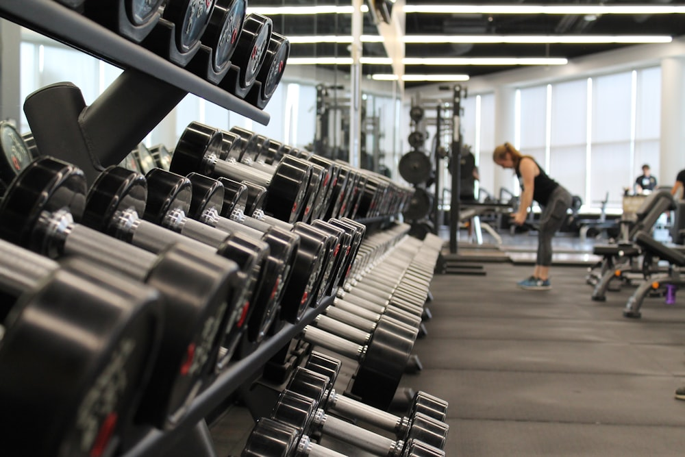

Kodlamaya ortaokul senelerimde merak saldım ve lise yıllarımda derslerde gördüğümüz python gibi basit denebilecek kodlama dillerini görerek iyice ısındım ve üniversitede Bilgisayar Mühendisliği bölümü okumaya karar verdim. Tabii bu hevesin havada kalmaması için günlük alıştırmalar yapmak gerekiyor bu alıştırmaların kaynağıda benim için udemy oldu. Nerdeyse her gün boş vakitlerimi Udemy’de kodlama alıştırmaları yaparak geçiriyorum.
Spora çocukluğumda merak saldım, o zamandan itibaren gerek takım sporları gerek bireysel sporlar bir çok sporla ilgilendim. En çok keyif aldığım sporlar voleybol ve vücut geliştirme. Volaybolu havanın iyi olduğun günlerde şuanki okulum olan Sakarya Üniversitesinde boş vakitlerimde oynuyorum ancak vücut geliştirmeyi haftalık spor ve beslenme programlarıyla düzenli bir şekilde yapmaya devam ediyorum.
Küçüklüğümden beri ebeveynlerimin uzun saatler çalışması nedeniyle evde yalnız kalıyorum. Bu nedenle kendime yemek yapmam gerekiyordu, bu durum ve yemek yemeyi çok sevmemin birleşimiyle iyi bir aşçı olmam kaçınılmazdı. Şu an canım ne çekerse yapabilecek seviyedeyim ve günlük vücut geliştirme için yurt odamda gerekli öğünleri hazırlıyorum.
Masa oyunlarına hep ilgim vardı ancak küçük bir şehir olan giresunda bu ilgimin pek peşine koşamadım ancak üniversitemin topluluklarından biri olan SauGeek topluluğu sayesinde hem insanlarla kaynaşıyorum hem de masa oyunları açlığımı gideriyorum.